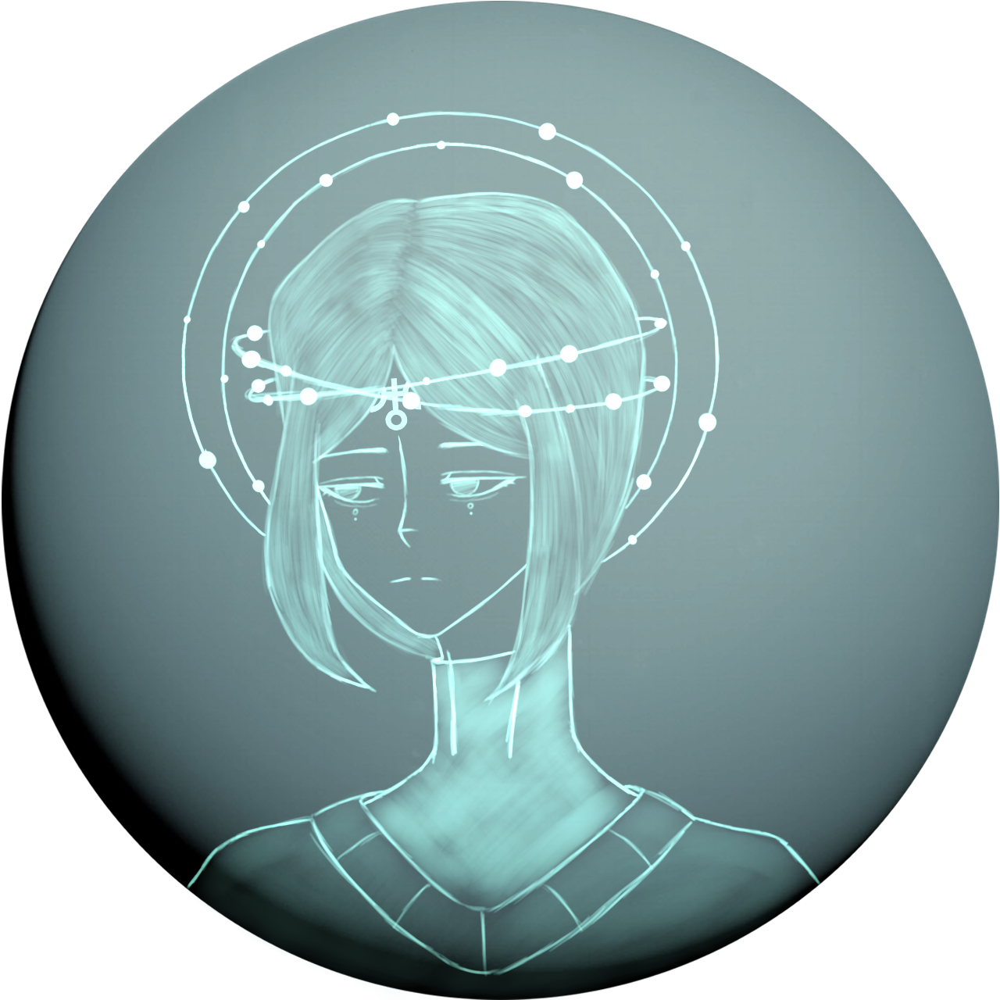
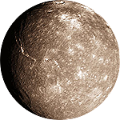
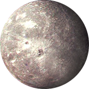
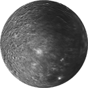

Седьмая по удалённости планета
Ледяной гигант - Уран
Ура́н — Была открыта в 1781 году английским астрономом Уильямом Гершелем и названа в честь греческого бога неба Урана. Уран стал первой планетой, обнаруженной в Новое время и при помощи телескопа. Это самая холодная планетарная атмосфера Солнечной системы с минимальной температурой в 49 К (−224 °C). Полагают, что Уран имеет сложное слоистое строение облаков, где вода составляет нижний слой, а метан — верхний. Недра Урана состоят в основном изо льдов и горных пород. Так же как у газовых гигантов Солнечной системы, у Урана имеется система колец и магнитосфера, а кроме того, 28 спутников.


Титания
Тита́ния — крупнейший спутник Урана и восьмой по размеру спутник в Солнечной системе. Назван в честь королевы фей из произведения Уильяма Шекспира «Сон в летнюю ночь». Четвёртый по отдалённости от Урана среди пяти его крупных спутников.

Оберон
Оберо́н — второй по размеру и массе спутник Урана, девятый по массе и десятый по размеру спутник в Солнечной системе. Назван в честь царя из произведения Уильяма Шекспира «Сон в летнюю ночь». Самый далёкий от Урана среди крупных спутников.

Умбриэль
Умбриэ́ль — спутник планеты Уран. Назван в честь гнома из поэмы английского поэта Александра Поупа «Похищение локона». Умбриэль в основном состоит изо льдов с существенной долей камня. Он имеет каменное ядро, покрытое ледяной мантией.